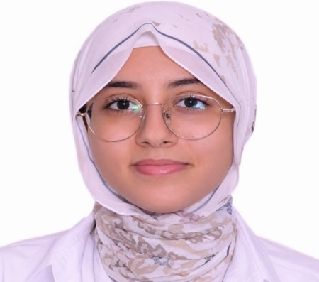

Ma formation, mon état d'esprit, et ce qui guide ma façon de travailler.
Étudiante en Master Big Data et Systèmes Intelligents, je construis mon parcours autour des données, de l'informatique et des technologies intelligentes. Diplômée d'une Licence en Sciences Mathématiques et Informatique, j'ai développé au cours de ma formation des compétences en programmation, bases de données, analyse de données et résolution de problèmes. Mon intérêt pour le Big Data et l'intelligence artificielle me pousse à approfondir continuellement mes connaissances et à explorer de nouvelles technologies, à travers mes projets universitaires. Curieuse, motivée et impliquée dans mon apprentissage, mon objectif est de continuer à progresser dans le domaine de la Data et de l'Intelligence Artificielle.
Programmation, outils et bases de données utilisés au quotidien dans mes projets et mon stage.
Mon parcours académique et ma première expérience en entreprise.
Projets académiques menés durant mon cursus, du développement web au machine learning. Certains ont été réalisés en binôme.
Ouverte aux stages et opportunités en data, intelligence artificielle et gestion de bases de données.